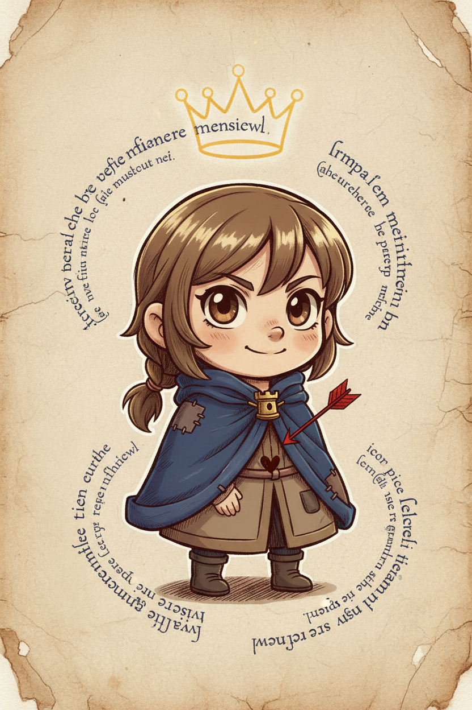
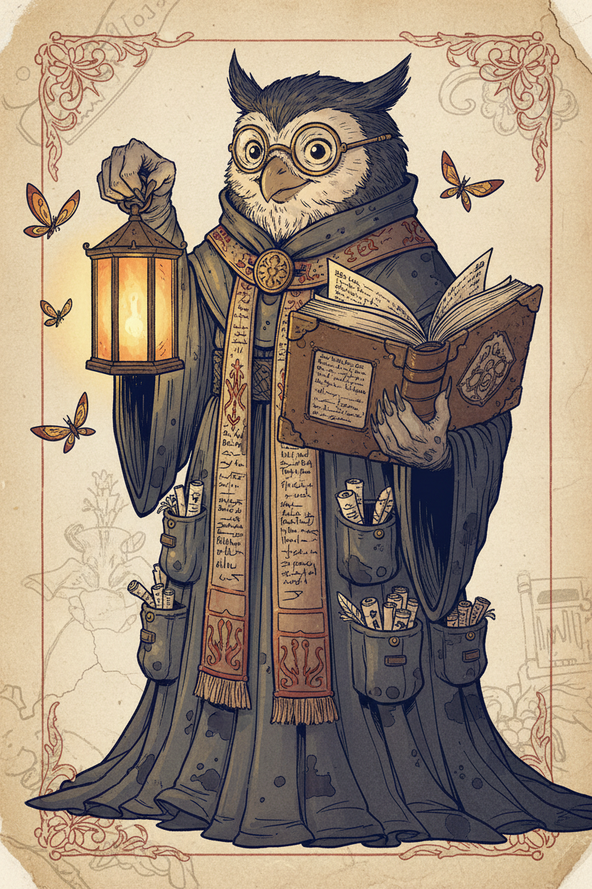
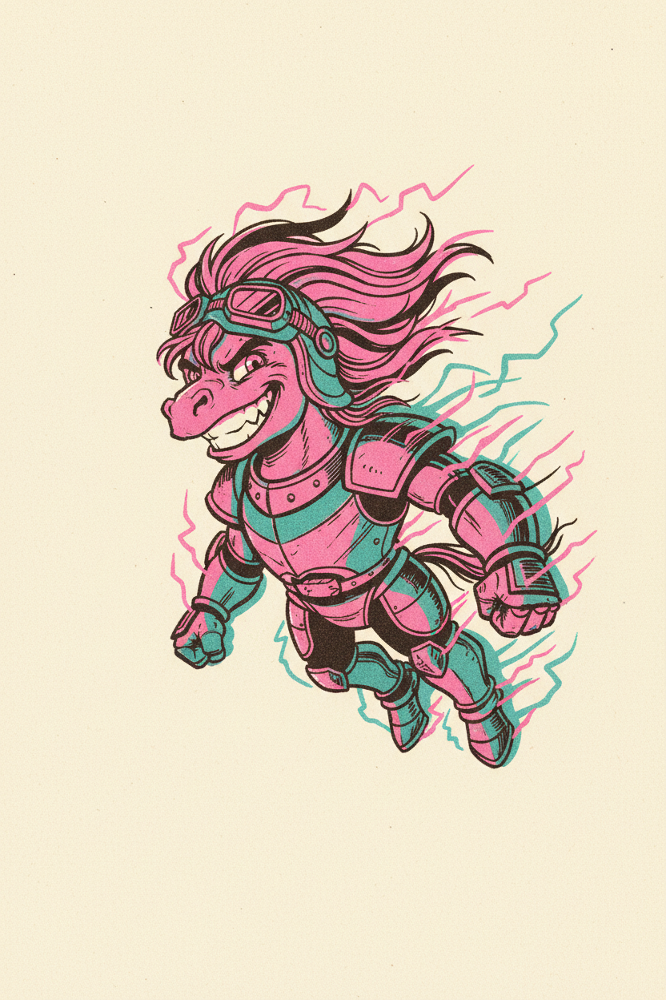
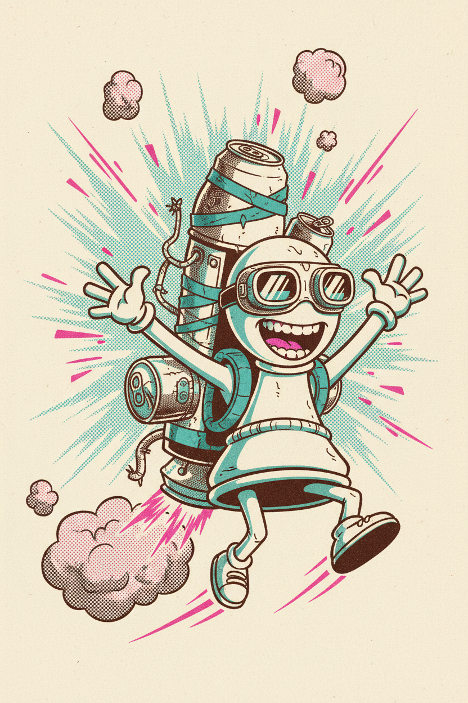
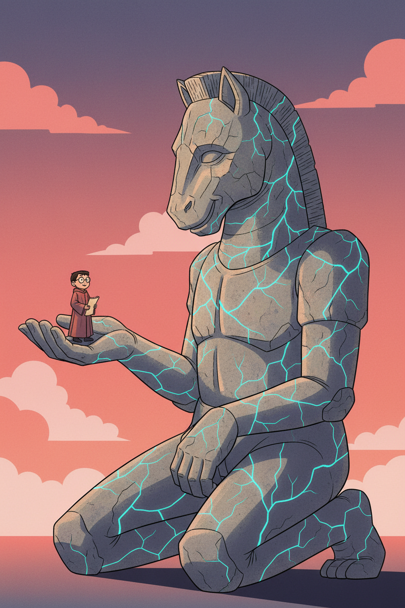
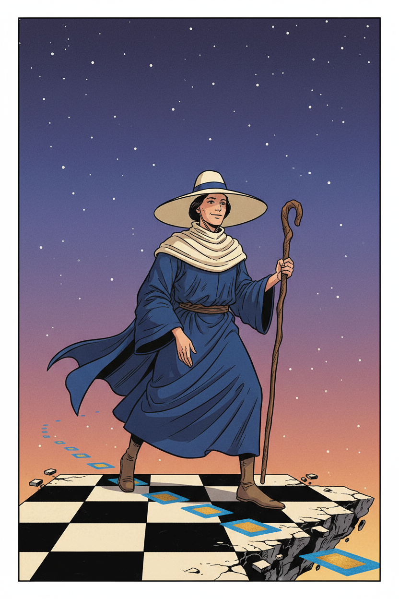
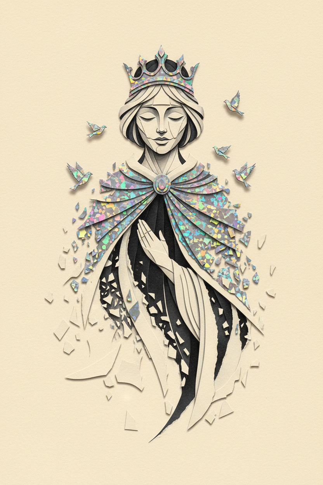
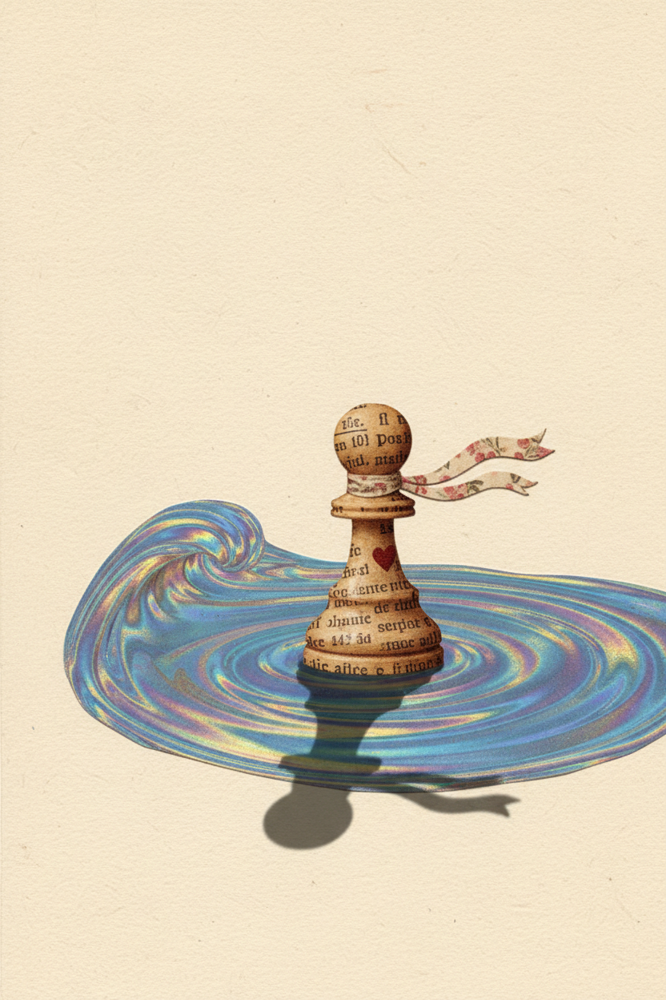

Two per faction. Working verdicts inline — the emerging rule: characters that keep the chess-piece silhouette (Solder, Fermata, the Docent) land; characters that drift fully human (Pip, Vesper) lose the game's DNA.

Pip — Marginalia pawnREDO: went chibi + human; she should be an actual pawn. Crown-ghost concept works.

The Docent — Marginalia bishopKEEP: owl librarian with scroll pockets and moths. Warm, wise, exactly the register.

Volt — Glitchwrights knightCLOSE: great energy/colors; grin reads slightly villainous, body oddly humanoid. Re-brief toward piece-body.

Solder — Glitchwrights pawnKEEP: pawn-shaped body + taped-can jetpack + pure joy. The template for how characters should work.

The Colossus — Errantry knightREDO: horse-headed humanoid is uncanny; the bake-off's knight-piece monument body was right. Keep the offered hand + tiny archivist.

Vesper — Errantry bishopREDO: lovely, but became a human wizard — zero chess DNA. Needs a bishop-piece body mid-stride.

The Quiet Queen — HushKEEP (borderline): gorgeous papercraft, dissolving foil cloak. Face is human — test a queen-piece version before locking.

Fermata — Hush pawnKEEP — best in show: newsprint pawn, scarf, red heart, the void curling around her… and her shadow is a running girl.